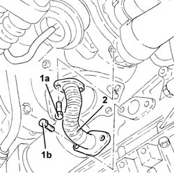
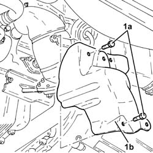
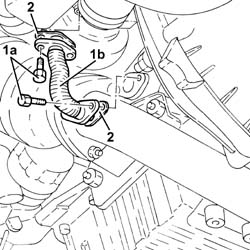

1084B42 engine oil return pipe from turbo - r + r
- Path
- Procedures > 10 ENGINE > 1084 ENGINE LUBRICATION SYSTEM > 1084B engine oil lubrication circuit > 1084B42 engine oil return pipe from turbo - r + r
- Kind
- repair procedure (removal / refitting; the operation number is the code)
- Applies to
- engines: 1.9 JTD 8V, 1.9 JTD 16V; all production periods
- Interactive page
- https://sloeber94.github.io/elrnDB-a147/en/#/3025073
Applies to: engines: 1.9 JTD 8V; all production periods
 Removing
Removing
 Refitting
Refitting7055B54 under-engine guard - r r
1. Undo the bolts (1a) and (1b) and remove the protection (1b) for the engine oil return pipe from the turbocharger.
2. Remove the engine oil return pipe from the turbocharger.

Applies to: engines: 1.9 JTD 8V; all production periods
Refitting
RemovingFit the steel engine oil return pipe from the turbocharger.
Tighten the retaining bolts.
Applies to: engines: 1.9 JTD 16V; all production periods
Removing
RefittingPosition the vehicle on the ramp.
Proceed with removal 7055B54 under-engine guard - r r .
1. Undo the bolts (1a) and remove the exhaust manifold heat shield (1b).

Applies to: engines: 1.9 JTD 16V; all production periods
1. Undo the bolts (1a) and remove the engine oil return pipe from the turbocharger (1b).
2. Remove the gaskets.

Applies to: engines: 1.9 JTD 16V; all production periods
Refitting
RemovingReplace the protection for the engine oil return pipe from the turbocharger complete with gaskets and fix it using the bolts.
Place the lower exhaust manifold heat shield back in its housing and fix it using the bolts.
Proceed with refitting 7055B54 under-engine guard - r r .
Remove the car from the ramps.